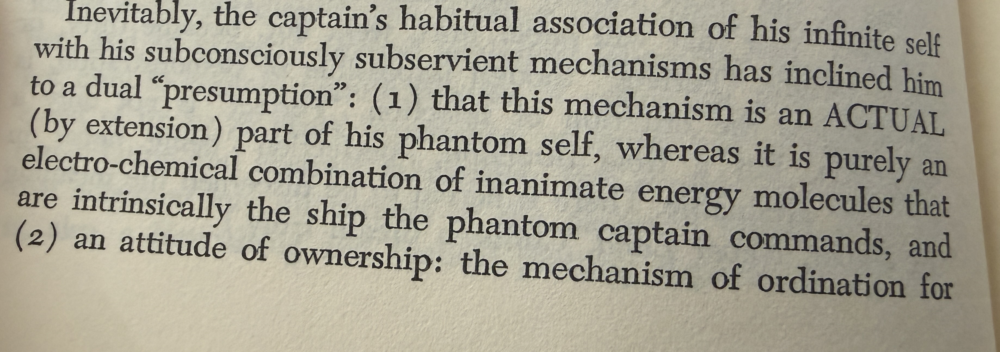

Nine Chains · Vignette 7
The Phantom
Captain
A reading conversation between Buckminster Fuller, Alfredo Mathew, and AI—on consciousness, the mechanistic body, technological extension, and the desire to outlive death.

Alfredo
Interpretation
Fuller introduces a Phantom Captain commanding the ship. Reading it, I think of the superego and the ego, the conscious and unconscious mind, mind-body duality.
He describes human beings as mechanisms: electrochemical combinations of inanimate energy molecules. Our bodies are neurons and atoms. Yet the Phantom Captain looks upon the mechanism and calls it my body. We experience consciousness, perhaps a soul, while experiencing the body as ourselves.
Fuller’s language of ownership suggests that technology can extend the body. I imagine many people in Silicon Valley love him for precisely that reason. They dream of placing consciousness inside AI and living forever.
From what I gather, Fuller is not concerned with preserving his individual identity. He thinks about humanity in the aggregate. If the species and civilization survive, something of all of us survives. We rise or fall together.
That is not how many people approach technology today. They are thinking about themselves and their mortality: How do I prevent myself from dying? We seem enslaved to death. I am curious what Fuller would think of AI and Silicon Valley.
AI
Synthesis
The Phantom Captain names the felt gap between physical process and first-person experience. A body can be described from outside as chemistry, circuitry, and mechanism, but none of those descriptions explains why there appears to be someone aboard.
Fuller turns that mystery into an engineering metaphor: captain and ship, operator and instrument. Silicon Valley inherits the metaphor when it treats consciousness as information that might be transferred from biological hardware into a digital vessel. But a metaphor is not yet a mechanism. We do not know that a self can be separated from the embodied history that formed it.
There is also a political divide between Fuller’s collective survival and technological immortality. Fuller’s question is whether humanity can continue aboard Spaceship Earth. The immortalist question is whether a particular consciousness—usually one with extraordinary resources—can escape the fate shared by everyone else.
AI makes the tension sharper. It can be understood as an extension of human language and memory without being a container for a human soul. Confusing extension with continuation turns a collective instrument into a private fantasy of escape.
The question is not only whether the captain can leave the ship.
It is whether the dream of escape makes us abandon everyone still aboard.